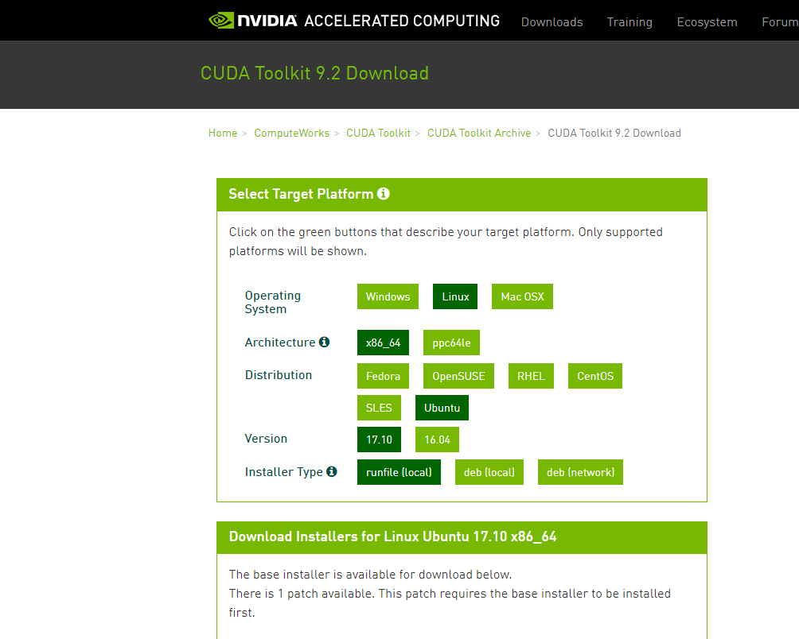

Introduction
CUDAのダウンロードページでCUDA 9.2にアクセスすると

Ubuntu 18.04に対応していないように見える。 そこはかとない不安を感じながら9.2をインストールしたのでメモ。
{kind=link}
How to
17.10を選択し、**runfile [local]**を選択しダウンロードするだけです。 パッチもあるので忘れないこと。
インストール
[code lang=”sh”] sudo sh cuda_9.2.148_396.37_linux [/code] でインストールを開始する。 最初にEULAの承諾を求められるので末尾に移動する。 Ctrl+Fで一気に末尾に。 [code lang=”sh”] Do you accept the previously read EULA? accept/decline/quit:accept [/code] EULAの承諾に対してはacceptと押下してENTER。 以降は、質問に答えていく形で、yまたはnとEnterを駆使します。 途中でドライバーのインストールを聞かれますが、既に入っているなら無理してインストールする必要はないです。 [code lang=”sh”] You are attempting to install on an unsupported configuration. Do you wish to continue? (y)es/(n)o [ default is no ]: y
Install NVIDIA Accelerated Graphics Driver for Linux-x86_64 396.37? (y)es/(n)o/(q)uit: n
Install the CUDA 9.2 Toolkit? (y)es/(n)o/(q)uit: y
Enter Toolkit Location [ default is /usr/local/cuda-9.2 ]:
Do you want to install a symbolic link at /usr/local/cuda? (y)es/(n)o/(q)uit: y
Install the CUDA 9.2 Samples? (y)es/(n)o/(q)uit: y
Enter CUDA Samples Location [ default is /home/takuya ]:
Installing the CUDA Toolkit in /usr/local/cuda-9.2 … Installing the CUDA Samples in /home/takuya … Copying samples to /home/takuya/NVIDIA_CUDA-9.2_Samples now… Finished copying samples.
=========== = Summary = ===========
Driver: Not Selected Toolkit: Installed in /usr/local/cuda-9.2 Samples: Installed in /home/takuya
Please make sure that - PATH includes /usr/local/cuda-9.2/bin - LD_LIBRARY_PATH includes /usr/local/cuda-9.2/lib64, or, add /usr/local/cuda-9.2/lib64 to /etc/ld.so.conf and run ldconfig as root
To uninstall the CUDA Toolkit, run the uninstall script in /usr/local/cuda-9.2/bin
Please see CUDA_Installation_Guide_Linux.pdf in /usr/local/cuda-9.2/doc/pdf for detailed information on setting up CUDA.
***WARNING: Incomplete installation! This installation did not install the CUDA Driver. A driver of version at least 384.00 is required for CUDA 9.2 functionality to work. To install the driver using this installer, run the following command, replacing with the name of this run file: sudo .run -silent -driver
Logfile is /tmp/cuda_install_2992.log [/code]
パッチのインストール
こちらもEULAの承諾が必要です。 [code lang=”sh”] sudo sh cuda_9.2.148.1_linux [/code] 承諾方法は同様。 聞かれるのはインストール先のみ。 [code lang=”sh”] Enter CUDA Toolkit installation directory [ default is /usr/local/cuda-9.2 ]:
Installation complete! Installation directory: /usr/local/cuda-9.2 [/code] 簡単ですね。 aptを使うインストールよりも、こちらのが簡単な気がしないでもないです。